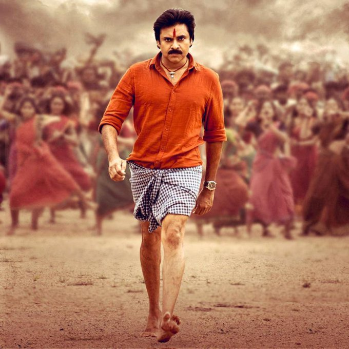
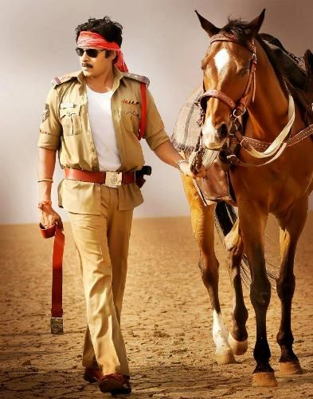

Pawan Kalyan garu was born as Konidela Kalyan Babu on 2 September 1971 to Konidela Venkata Rao and Anjana Devi in Bapatla, Andhra Pradesh. He is the younger brother of Chiranjeevi and Nagendra Babu. He started using the name "Pawan" after a martial arts presentation, he organized to demonstrate his training. He holds a black belt in karate. He is an Indian actor, politician, director, screen-writer, stunt coordinator, philanthropist, Producer and Singer. He is No.1 hero in TeluguFilm industry, His films are predominantly in Telugu cinema. Kalyan made his debut in the 1996 film Akkada Ammayi Ikkada Abbayi. He starred in Tholi Prema in 1998, which won the National Film Award for Best Feature Film in Telugu that year. Politically Referred to as "JANASENANI" and also Referred to as "POWER STAR" by his fans, Kalyan is known for films such as Akkada Ammayi Ikkada Abbayi, Gokulamlo Seeta, Suswagatham, Tholi Prema, Thammudu, Badri, Kushi, Johhny, Gudumba Shankar, Balu, Jalsa, Puli, Panja, Teen Maar, Cameraman Gangatho Rambabu, Gabbar Singh, Gopala Gopala and Attarintiki Daredi, Sardar Gabbar singh, Katamarayudu, Agnyathavaasi, Vakeel Saab, Bheemla Nayak, Hari Hara Veera Mallu, Bhavadeeyudu Bhagat Singh. He received the Filmfare Award for Best Actor - Telugu for Gabbar Singh, while Attarintiki Daredi held the record of being the highest-grossing Telugu film.He was listed 26th in 2013, 69th in 2017, and 24th in 2018 respectively in the Forbes India list of top 100 Celebrities.He produces films under the banners Anjana Productions and Pawan Kalyan Creative Works.
 Bheemla Nayak(2022)
Vakeel Saab(2021)
Attarintiki Daredi(2013)
Gabbar Singh(2012)
Kushi(2001)
Badri(2000)
Thammudu(1999)
Tholi Prema(1998)
Suswagatham(1998)
Jalsa(2008)
Katamarayudu(2017)
Cameraman Ganga Tho Rambabu(2012)
Agnyathavaasi(2018)
Gopala Gopala(2015)
Annavaram(2006)
Balu(2005)
Gudumba Shankar(2004)
Gokulamlo Seeta(1997)
Akkada Ammayi Ikkada Ammayi(1996)
Sardar Gabbar Singh(2016)
panja(2011)
Puli(2010)
Johnny(2003)
Jana Sena Party (JSP) is an Indian Regional political party based in Andhra Pradesh and Telangana, India. It was founded by politician ANASENANI Pawan Kalyan on 14 March 2014. Jana Sena means "People's Army" in Telugu.The motto of the party is
"fight for the rights of each and every common person"
"New age politics".
On 12 March 2014, Pawan Kalyan submitted the application to register the party name. Kalyan formally launched the party at the HITEC City business district in Madhapur, Hyderabad, on 14 March with a massive meeting. This was followed by another public gathering and meeting in Vizag where he launched his book Ism. The party was approved by the Election Commission on 11 December 2014.
The main goal of Jana Sena is to question any type of corruption in government functioning and organizations and to protect basic rights of people. JSP follow 7 basic ideals promoted as Ideals of JanaSena (JanaSena Siddhanthalu in Telugu):
Social consciousness without caste
Politics without religious discrimination
Reverence for linguistic diversity
Protection of our traditions and culture
Nationalism without neglecting regional aspirations
Relentless fight against corruption
Progress that preserves the environment
Pawan Kalyan released the party's 2019 election manifesto on 5th formation day of JSP at Rajahmundry. The party declared war on unemployment and corruption, and wished to ensure the safety of women. Other goals included:
Irrigation support fund of ₹8,000 per acre to every farmer's family
Dokka Seethamma canteen, which provides free food for students
5,000 pension for small marginal tenant-farmers above 60 years of age and free solar pump-sets for all farmers
Arts and science college at every mandal level
10 lakh (one million rupees) free health insurance, and mobile diagnostic centers in all mandals
10,000 financial support at 25 paisa interest to small businesses
Implementation of Sachar Committee recommendations
Free education from LKG to PG
Free liquid petroleum gas cylinders for housewives
Financial support for fishermen during the non-fishing season
High court bench in Rayalaseema
Chief minister (CM) to be brought under LokAyukta
33% reservations for women in the state legislature and establishment of Mahila banks in all districts
Ten lakh (one million) jobs every year.